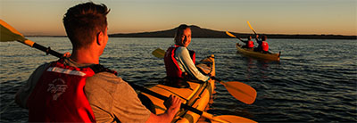
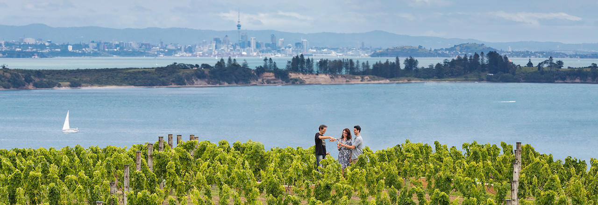
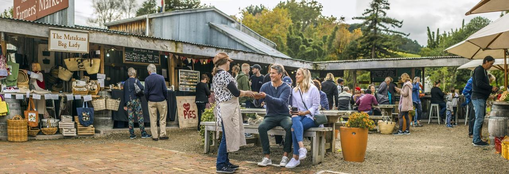

Auckland
Si hablamos de qué ver en Auckland, hablamos de descubrir la mayor de las principales ciudades
de Nueva Zelanda: no en vano, alberga una tercera parte de la población del país, convirtiéndose
en la zona urbana por excelencia que ver en Nueva Zelanda.
Conocida como «la ciudad de las velas», esta encantadora ciudad portuaria no destaca únicamente
por su multiculturalidad, sino también por su excelencia académica y una amplia oferta laboral,
por lo que es una opción a considerar por todos aquellos estudiantes y viajeros de todo el mundo
interesados en vivir en Nueva Zelanda.

Miluska: Pese a no ser la capital de Nueva Zelanda (es Wellington), Auckland es la mayor ciudad del país y una de las más vibrantes. Orientada de cara al mar y con un sinfín de parques construidos sobre conos volcánicos, tiene una oferta cultural singular y en ella vive una comunidad diversa y vibrante. ¿No sabes por dónde empezar? Aquí van los 10 lugares que ver en Auckland en dos días.
A menos de una hora de la ciudad de Auckland se encuentran las salvajes playas de la costa oeste, donde el mar de Tasmania se encuentra con largos y vastos trechos de arena negra. Visitá la playa Muriwai Beach para ver los impresionantes acantilados y colonias de alcatraces o dirigite a Piha, una popular playa para surfear, y Karekare, famosa por ser el telón de fondo de la película La lección de piano.
Rangitoto, la isla más emblemática de Auckland, es un cono volcánico inactivo que se encuentra cerca de la costa del centro de la ciudad. Realizá un viaje corto en ferri desde la ciudad para caminar o realizar una excursión guiada hasta la cima para obtener vistas espectaculares, o deslizate a través de la bahía a fuerza de remo en una excursión en kayak al atardecer.
La isla Waiheke es la mejor opción para una escapada a una isla, a solo 35 minutos en ferri del centro de Auckland. Conocida como la 'isla de vino' por sus muchas bodegas y viñedos, no podés dejar de hacer una excursión de cata de vinos. Disfrutá de ir por el día y explorar las playas, restaurantes y otras actividades en la isla.
Las tierras fértiles y ricas aguas de Auckland hacen que la región albergue productores de alimentos de primera clase. Para aquellos a quienes les apasionan los ingredientes frescos y deliciosos, es el paraíso. Hacé una excursión con The Big Foodie, Foodcraft ,Zest o Great Taste y conocé la gastronomía de Auckland.
Las hermosas playas, los viñedos boutique, la movida artística local y el pintoresco pueblo, además de un magnífico mercado de productores, hacen que la región de Matakana sea un excelente destino. Para pasar un día explorando y catando vinos, date el gusto de hacer una excursión de lujo a los viñedos con Great Tastes Matakana.
